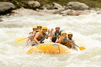

White water rafting has a rich history that dates back to the early 19th century. It began as a means of transportation for explorers and settlers navigating the rivers of North America. Over the years, it evolved into a recreational activity, gaining popularity in the 1970s and 1980s. Today, white water rafting is enjoyed by millions around the world, with various organizations and companies offering guided trips on rivers of all levels of difficulty. The sport has also become a competitive event, with international competitions showcasing the skills and techniques of professional rafters.
White water rafting is not just about the thrill of navigating rapids; it also promotes teamwork, communication, and a deep appreciation for nature. Rafters work together to steer the raft, navigate obstacles, and ensure everyone's safety. This camaraderie and connection to the environment make white water rafting a unique and rewarding experience.